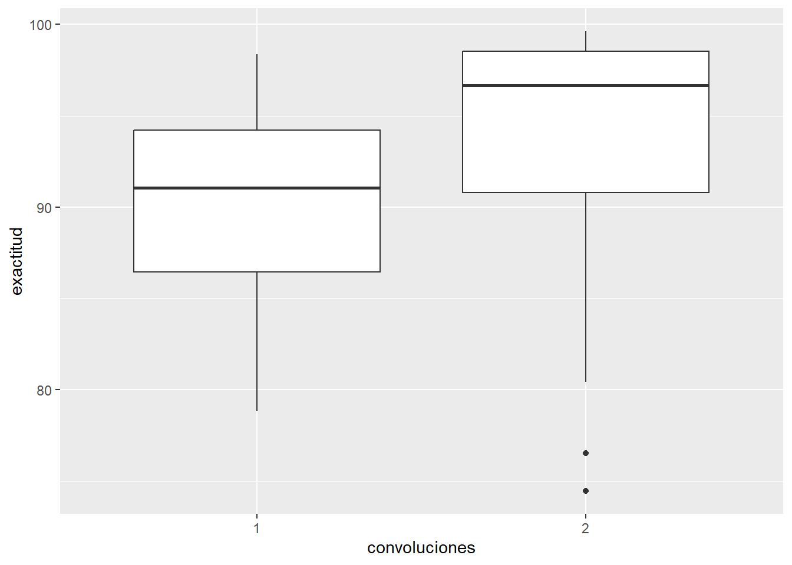

# A tibble: 50 × 6
orden tratamiento convoluciones filtros densa exactitud
<dbl> <chr> <fct> <fct> <fct> <dbl>
1 1 C1_F4_D64 1 4 64 81.0
2 2 C1_F4_D128 1 4 128 85.4
3 3 C1_F16_D64 1 16 64 85.9
4 4 C1_F16_D128 1 16 128 90.9
5 5 C2_F4_D64 2 4 64 76.5
6 6 C2_F4_D128 2 4 128 84.9
7 7 C2_F16_D64 2 16 64 92.3
8 8 C2_F16_D128 2 16 128 96.5
9 9 C1_F4_D64 1 4 64 82.1
10 10 C1_F4_D128 1 4 128 86.7
# ℹ 40 more rowsDiseño factorial
Juan Carlos Gaviria Chaverra, Andrés Orlando López Henao
1. Plan y ejecución del experimento
1.1. Título del experimento
Influencia de la arquitectura de redes neuronales convolucionales en la exactitud de predicción de señales de tránsito.
1.2. Objetivos
Evaluar cómo diferentes arquitecturas de redes neuronales convolucionales afectan la exactitud de predicción de señales de tránsito.
1.3. Marco teórico
Se ha observado un incremento significativo en la cantidad de fatalidades ocasionadas por percances automovilísticos a nivel global, siendo la causa primordial la falta de familiaridad con las indicaciones viales y las vías, aunque la razón más común es en parte el desconocimiento de ciertas señales viales específicas (OMS, 2022). Los incidentes de tránsito representan para la mayoría de las naciones un 3% de su producto interno bruto (PIB). Entre los años 2015 y 2030, se estima que estos incidentes tendrán un costo para la economía mundial de 1,8 billones de dólares, lo que equivale al 0,12% del PIB global (Al-Rousan et al., 2021). El aprendizaje automático consiste en un conjunto de técnicas y procedimientos destinados a generar inteligencia artificial mediante el uso de algoritmos y grandes volúmenes de datos con el fin de simular el proceso de aprendizaje (Gu et al., 2108). El aprendizaje profundo, como una subdivisión del aprendizaje automático, se basa en arquitecturas de redes neuronales con múltiples capas internas, tales como las Redes Neuronales Convolucionales (CNN) (Indolia et al., 2018). La identificación de señales de tráfico (TSR por sus siglas en inglés) constituye una tarea de visión artificial y aprendizaje automático que implica el reconocimiento y clasificación de señales de tráfico a partir de imágenes o secuencias de video (Liu et al., 2019). Los algoritmos de visión artificial para la detección de señales de tráfico se relacionan directamente con sus atributos distintivos. Principalmente, las señales de tráfico adoptan formas como triángulos, rectángulos, círculos u octágonos, además de presentar colores (Sheikah et al., 2016). Los colores empleados en las señales de tráfico suelen ser colores básicos como rojo, azul, negro, blanco, amarillo y, de forma menos frecuente, verde. Por ende, los enfoques de detección se clasifican principalmente en métodos basados en color y forma para determinar la característica de la imagen (Fan y Zhang, 2015). En el contexto de la visión por computadora, el reconocimiento de imágenes se refiere a la habilidad del software para identificar elementos, individuos, lugares, escritos y actividades en imágenes. Para llevar a cabo dicha identificación, los sistemas computacionales pueden emplear tecnologías de visión por computadora en combinación con cámaras y software basado en inteligencia artificial. (SearchEnterpriseAI).
1.4. Variable respuesta
Variable: Exactitud de predicción.
Valores usuales de operación: Entre 0 y 100.
Precisión de medición: Porcentaje.
Instrumento de medida: No aplica.
1.5. Variables de control
| Variable | Valores usuales de operación | Precisión de medición | Instrumento de medida | Configuración propuesta | Efecto predicho |
|---|---|---|---|---|---|
| Convoluciones | Entre 1 y 10 | Número entero | No aplica | [1, 2] | La exactitud de predicción aumentará a mayor número. |
| Filtros | Entre 1 y 100 | Número entero | No aplica | [4, 16] | La exactitud de predicción aumentará a mayor número. |
| Densa | Entre 1 y 1000 | Número entero | No aplica | [65, 128] | La exactitud de predicción aumentará a mayor número. |
1.6. Factores controlables
Listado de factores que se mantendrán constantes en el experimento:
Factores externos al modelo
| Variable | Nivel deseado | Precisión de medición | Instrumento de medida | Control | Impacto esperado |
|---|---|---|---|---|---|
| Dataset | Superior a 1000 | Imágenes | No aplica | Se usarán las mismas imágenes de entrenamiento y validación para todos los modelos | Obtención de una mejor comprensión de cómo diferentes configuraciones afectan el rendimiento del modelo, con el fin de identificar la arquitectura más adecuada para mejorar la exactitud predictiva. |
Factores internos del modelo
| Variable | Nivel deseado | Precisión de medición | Instrumento de medida | Control | Impacto esperado |
|---|---|---|---|---|---|
| Funcion de activación | Depende de la función seleccionada | No aplica | No aplica | Se aplicará la función de activación RELU para las capas convolucionales y la primera capa densa, y softwax para la última capa. | Obtenención de una consistencia en el comportamiento de los modelos y en una extracción de características más uniforme a lo largo de las capas. |
| Compilación del modelo | No aplica | No aplica | No aplica | Se usarán los parametros: loss=‘binary_crossentropy’ optimizer=‘adam’ metrics=[‘accuracy’] |
Aseguramiento de la coherencia en el proceso de entrenamiento y evaluación. Esto garantiza que todos los modelos sean entrenados y evaluados de manera similar, facilitando la comparación de sus desempeños y simplificando la gestión de los experimentos de aprendizaje automático. |
1.7. Factores no controlables
Listado de factores que no se mantendrán constantes en el experimento:
Factores externos al modelo
| Variable | Nivel deseado | Precisión de medición | Instrumento de medida | Estrategia | Efectos anticipados |
|---|---|---|---|---|---|
| Procesamiento computacional | No aplica | No aplica | No aplica | Uso de configuraciones idénticas de hardware | Variación en el tiempo de procesamiento, limitando el número de muestras a tomar. |
| Tiempo de entrenamiento por modelo | Entre 0 y 60 | Minutos | Cronómetro | Uso de configuraciones idénticas de hardware | Limitación en el número de muestras a tomar. |
Factores internos del modelo CNN
| Variable | Nivel deseado | Precisión de medición | Instrumento de medida | Estrategia | Efectos anticipados |
|---|---|---|---|---|---|
| Pesos | Entre 0 y 1 | Número real | No aplica | Inicialización aleatoria | La inicialización aleatoria de pesos en una red neuronal convolucional promueve la diversidad desde el inicio del entrenamiento, ayudando a evitar mínimos locales y aumentando la capacidad del modelo para adaptarse a diferentes conjuntos de datos. Esto mejora la capacidad de generalización y la robustez del modelo. |
1.8. Interacciones
Los ensayos en cada tratamiento deben realizarse de manera separada tomando una de las repeticiones de cada tratamiento y ubicarlos a una distancia que el calor de una vela no pueda afectar la otra, se deben encender al mismo instante y esperar la combustión de las primeras 4 velas con diferente tratamiento durante un periodo de tiempo donde se apague la hasta la ultima vela, teniendo en cuenta que el registro de la combustión en cada vela debe ser tomado cuando esta se apague en su totalidad, el terminar el primer ensayo se debe proceder con el segundo de la misma forma hasta lograr abordar las cinco replicas y la cuantificación de los tiempos de combustión en cada una de las velas, se debe evitar encender todas las velas al mismo instante, ya que el calor que se produce alrededor de estas podría alterar los tratamientos al ocasionar derretimiento de la cera en algunas de las velas que se encuentren en una posición donde puedan recibir mayor radiación de calor por velas que se encuentren próximas y de este modo crear un sesgo en la combustión total de alguna de los tratamientos y ocasionar errores en el registro de los tiempos totales de combustión ocasionando alteración en el experimento.
1.9. Restricciones
Las restricciones que se tuvieron en cuenta para la realización del experimento estuvieron enfocadas en que algunas podrían afectar el diseño al igual que los objetivos de los estudios por lo cual nos aseguramos de las siguientes: Seguridad: fue fundamental para evitar posible incendio dentro del cuarto debido a una combustión alterada que pudiera estar fuera de control y provocara encendido del entorno del experimento. Ventilación: el experimento se realizó en un área ventilada de manera regulada que permitió la combustión de las velas, pero a la vez que estas no se apagaran ni diseminara la llama por acción del viento. Espacio y condiciones físicas del cuarto: Se procuró que este espacio fuera el más adecuado en cuestión de área para la combustión segura de las velas. Manipulación de las velas: Las velas desde el primer instante se planificó su ubicación en el cuarto y en la tabla al igual que el momento del encendido, evitando que las distancias no afectaran el entorno por medio del derrame de la cera de las velas ni la diseminación de la llama dentro del cuarto que pudieran provocar posibles incendios o quemaduras al responsable de la ejecución del experimento. Material y equipo de seguridad: Se tuvieron en cuenta todas las precauciones para la manipulación de las velas que pudiera provocar accidentes en el proceso de realización del experimento. Residuos y limpieza: posterior a la realización del experimento se realizó el debido proceso para la separación de la será de la tabla al igual que el barrido de todo material que quedo de residuo luego de la aplicación del experimento.
Este diseño experimental se realizó en un cuarto aislado para poder tener control sobre alguna de las siguientes variables: Temperatura: Esta se mantuvo alrededor de los 28° C. Humedad relativa: Se mantuvo alrededor del 70%. Velas: Las velas con la cual se llevo a cabo los experimentos fueron del mismo tamaño para cada tratamiento y con la misma composición de cera, con una altura de 1 cm cada una y un diámetro de 2 cm, las mechas del mismo diámetro, pero con diferentes longitudes en cada uno de los tratamientos, T1= 1cm, T2=1.5cm, T3= 2 cm, y T4= 2.5 cm, cada tratamiento se repitió 5 veces.
Los ensayos se realizaron en cinco intervalos de tiempo donde en cada ensayo se encendió una vela por cada tratamiento sobre una tabla de acero inoxidable de (70x15x5) cm, el registro de la combustión en cada ensayo se llevó a cabo aproximadamente durante 37 minutos, tomando como tiempo total de combustión en las velas cuando la mecha se apagaba totalmente.
Se espera que la temperatura, la humedad relativa, la composición y el volumen de las velas tengan un impacto mínimo en la combustión, por el contrario, se espera que cualquier cambio en la combustión de las velas se deba principalmente a la longitud de la mecha, permitiendo analizar de manera efectiva el impacto en el proceso de combustión de las velas.
1.10. Diseño

Diseño Experimental: Se utilizará un diseño completamente aleatorizado con cuatro niveles de mecha donde se mide el tiempo de combustión de las velas.
Factor: Longitud de la mecha.
Tratamientos:
T1: Mecha 1 cm de longitud.
T2: Mecha 1,5 cm longitud.
T3: Mecha 2 cm longitud.
T4: Mecha 2,5 cm longitud.
Materiales:
Velas idénticas en tamaño y composición con mechas de diferentes longitudes.
Soportes para velas.
Cronómetro.
Encendedor.
Procedimiento:
Cortar las mechas de manera uniforme en tres grupos con diferentes longitudes.
Fijar las mechas en las velas correspondientes según los grupos establecidos.
Encender cada vela al mismo tiempo y colocarlas en soportes idénticos.
Registrar el tiempo desde que se encienden hasta que se apagan por completo.
Repetir el experimento con varias velas para obtener datos adicionales.
Análisis de Datos: Comparar el tiempo promedio de combustión entre los cuatro tipos de longitud de las mechas utilizando análisis estadísticos, como el análisis de varianza (ANOVA) de un factor.
Hipótesis: Se espera que velas con mechas de mayor longitud tengan una duración de combustión más larga.
Resultados Esperados: Se espera que las velas con mechas de mayor longitud tengan una duración de combustión más larga en comparación con las mechas de menor longitud, de acuerdo con la hipótesis.
1.11. Descripción
La técnica de análisis y presentación utilizada en este experimento de 1 factor con 4 tratamientos se basa en una combinación de herramientas estadísticas y gráficas diseñadas para explorar y comunicar los resultados de manera efectiva.
Gráficas Se utilizan histogramas para visualizar la distribución de los datos en cada tratamiento, lo que permite una comprensión rápida de la forma y la dispersión de los datos. Los gráficos de cajas para comparar la distribución de los datos entre los diferentes tratamientos, mostrando la mediana, los cuartiles y los valores atípicos y los gráficos de dispersión para explorar la relación entre variables, como los valores ajustados y los residuos.
ANOVAs: Se realiza un ANOVA para comparar las medias de los tratamientos y determinar si hay diferencias significativas entre ellos. Se evalúa la significancia estadística, lo que proporciona información sobre la variabilidad entre los tratamientos en relación con la variabilidad dentro de los tratamientos. Después de realizar el ANOVA, se realiza la prueba Tukey como una prueba para comparar todas las combinaciones posibles de pares de tratamientos y determinar qué diferencias son significativas.
Modelos de Efectos, Medias y Regresión: Se utilizan diferentes modelos para analizar los datos según la pregunta de investigación. El modelo de efectos considera cada tratamiento como un factor independiente, mientras que el modelo de medias agrupa los tratamientos y compara las medias globales. El modelo de regresión permite explorar la relación entre la variable dependiente y las variables independientes.
Pruebas de Homocedasticidad y Normalidad: Se realizan pruebas de homocedasticidad para evaluar si la varianza de los residuos es constante en todos los tratamientos.
Las pruebas de normalidad Anderson-Darling, Shapiro-Wilk, Jarque-Bera, Kolmogorov-Smirnov se utilizarán para verificar si los residuos siguen una distribución normal.
Valores Ajustados vs Residuales e Independencia de Errores: Con las pruebas Levene, Bartlett, Breusch-Pagan y Durbin-Watson, Se examina la relación entre los valores ajustados y los residuos para evaluar la idoneidad del modelo. Además, se verifica la independencia de errores para garantizar que los errores no estén correlacionados entre sí
Comparación entre Tratamientos: Se realizan comparaciones entre tratamientos utilizando los métodos de la diferencia significativa menos significativa (LSD) y la diferencia significativa honesta (HSD) para identificar las diferencias significativas entre los tratamientos y agruparlos en categorías homogéneas.
En resumen, esta técnica de análisis y presentación utiliza una variedad de herramientas estadísticas y gráficas para explorar y comunicar los resultados de manera efectiva en un experimento de 1 factor con 4 tratamientos. Se enfoca en la comparación de medias, la relación entre variables, la evaluación de la normalidad y homocedasticidad de los residuos, y la identificación de diferencias significativas entre tratamientos.
1.12. Responsable de coordinación
Juan Carlos Gaviria Chaverra.
1.13. Premuestreo
No se realizará premuestreo por las siguientes razones:
Simplicidad del experimento: El diseño experimental es directo y no implica procedimientos complicados. Consiste en encender velas con diferentes longitudes de mecha y medir la duración de la combustión. Dado que el procedimiento es simple y fácil de ejecutar, no se requiere una fase preliminar de recolección de datos para ajustar o validar el método experimental.
Condiciones experimentales bien definidas: Las condiciones del experimento, como el ambiente de prueba y los materiales utilizados, son conocidas y estables. Se llevará a cabo en un entorno controlado y las velas utilizadas serán consistentes en calidad y composición. Por lo tanto, se puede tener confianza en la replicabilidad de los resultados sin la necesidad de un premuestreo para ajustar o validar estas condiciones.
Recursos limitados: Los recursos disponibles, como tiempo, dinero y personal, son limitados.
2. Análisis
2.1 Datos
2.2. Análisis exploratorio

Interpretaciones …

Interpretaciones …

Interpretaciones …

Interpretaciones …

Interpretaciones …

Interpretaciones …

Interpretaciones …
$`1`
Min. 1st Qu. Median Mean 3rd Qu. Max.
78.84 86.47 91.05 90.28 94.22 98.37
$`2`
Min. 1st Qu. Median Mean 3rd Qu. Max.
74.46 90.79 96.67 93.95 98.52 99.62 $`4`
Min. 1st Qu. Median Mean 3rd Qu. Max.
74.46 85.27 90.29 89.73 95.00 99.02
$`16`
Min. 1st Qu. Median Mean 3rd Qu. Max.
84.22 91.32 95.25 94.50 98.18 99.62 $`64`
Min. 1st Qu. Median Mean 3rd Qu. Max.
74.46 85.73 91.64 90.15 94.42 99.14
$`128`
Min. 1st Qu. Median Mean 3rd Qu. Max.
83.72 90.66 95.26 94.08 98.03 99.62 Interpretaciones …
`stat_bin()` using `bins = 30`. Pick better value with `binwidth`.
Interpretaciones …
x.x.Gráficos de medias

[1] 92.11468

Interpretaciones …
x.x.ANOVA
Df Sum Sq Mean Sq F value Pr(>F)
convoluciones 1 269.8 269.8 10.767 0.001595 **
filtros 1 456.7 456.7 18.228 5.89e-05 ***
densa 1 309.6 309.6 12.357 0.000764 ***
convoluciones:filtros 1 31.5 31.5 1.256 0.266124
convoluciones:densa 1 1.9 1.9 0.074 0.786039
filtros:densa 1 6.2 6.2 0.248 0.619857
convoluciones:filtros:densa 1 42.1 42.1 1.680 0.199089
Residuals 72 1804.1 25.1
---
Signif. codes: 0 '***' 0.001 '**' 0.01 '*' 0.05 '.' 0.1 ' ' 1 Df Sum Sq Mean Sq F value Pr(>F)
filtros 1 456.7 456.7 18.060 6.24e-05 ***
densa 1 309.6 309.6 12.243 0.00080 ***
convoluciones 1 269.8 269.8 10.667 0.00166 **
filtros:densa 1 6.2 6.2 0.246 0.62145
densa:convoluciones 1 1.9 1.9 0.074 0.78699
filtros:convoluciones 1 31.5 31.5 1.244 0.26827
Residuals 73 1846.2 25.3
---
Signif. codes: 0 '***' 0.001 '**' 0.01 '*' 0.05 '.' 0.1 ' ' 1
[1] 21 5
Shapiro-Wilk normality test
data: residuales
W = 0.97293, p-value = 0.08737
Anderson-Darling normality test
data: residuales
A = 0.69564, p-value = 0.06672Interpretaciones …
Call:
lm(formula = exactitud ~ as.numeric(convoluciones) * as.numeric(filtros) *
as.numeric(densa), data = datos)
Residuals:
Min 1Q Median 3Q Max
-13.351 -3.772 1.317 3.330 9.475
Coefficients:
Estimate
(Intercept) 97.628
as.numeric(convoluciones) -14.062
as.numeric(filtros) -10.368
as.numeric(densa) -8.364
as.numeric(convoluciones):as.numeric(filtros) 11.213
as.numeric(convoluciones):as.numeric(densa) 9.314
as.numeric(filtros):as.numeric(densa) 7.589
as.numeric(convoluciones):as.numeric(filtros):as.numeric(densa) -5.803
Std. Error
(Intercept) 17.698
as.numeric(convoluciones) 11.193
as.numeric(filtros) 11.193
as.numeric(densa) 11.193
as.numeric(convoluciones):as.numeric(filtros) 7.079
as.numeric(convoluciones):as.numeric(densa) 7.079
as.numeric(filtros):as.numeric(densa) 7.079
as.numeric(convoluciones):as.numeric(filtros):as.numeric(densa) 4.477
t value
(Intercept) 5.516
as.numeric(convoluciones) -1.256
as.numeric(filtros) -0.926
as.numeric(densa) -0.747
as.numeric(convoluciones):as.numeric(filtros) 1.584
as.numeric(convoluciones):as.numeric(densa) 1.316
as.numeric(filtros):as.numeric(densa) 1.072
as.numeric(convoluciones):as.numeric(filtros):as.numeric(densa) -1.296
Pr(>|t|)
(Intercept) 5.14e-07 ***
as.numeric(convoluciones) 0.213
as.numeric(filtros) 0.357
as.numeric(densa) 0.457
as.numeric(convoluciones):as.numeric(filtros) 0.118
as.numeric(convoluciones):as.numeric(densa) 0.192
as.numeric(filtros):as.numeric(densa) 0.287
as.numeric(convoluciones):as.numeric(filtros):as.numeric(densa) 0.199
---
Signif. codes: 0 '***' 0.001 '**' 0.01 '*' 0.05 '.' 0.1 ' ' 1
Residual standard error: 5.006 on 72 degrees of freedom
Multiple R-squared: 0.3826, Adjusted R-squared: 0.3225
F-statistic: 6.373 on 7 and 72 DF, p-value: 7.699e-06
Call:
lm(formula = exactitud ~ as.numeric(convoluciones) * as.numeric(filtros) *
as.numeric(densa), data = datos)
Residuals:
Min 1Q Median 3Q Max
-13.351 -3.772 1.317 3.330 9.475
Coefficients:
Estimate
(Intercept) 97.628
as.numeric(convoluciones) -14.062
as.numeric(filtros) -10.368
as.numeric(densa) -8.364
as.numeric(convoluciones):as.numeric(filtros) 11.213
as.numeric(convoluciones):as.numeric(densa) 9.314
as.numeric(filtros):as.numeric(densa) 7.589
as.numeric(convoluciones):as.numeric(filtros):as.numeric(densa) -5.803
Std. Error
(Intercept) 17.698
as.numeric(convoluciones) 11.193
as.numeric(filtros) 11.193
as.numeric(densa) 11.193
as.numeric(convoluciones):as.numeric(filtros) 7.079
as.numeric(convoluciones):as.numeric(densa) 7.079
as.numeric(filtros):as.numeric(densa) 7.079
as.numeric(convoluciones):as.numeric(filtros):as.numeric(densa) 4.477
t value
(Intercept) 5.516
as.numeric(convoluciones) -1.256
as.numeric(filtros) -0.926
as.numeric(densa) -0.747
as.numeric(convoluciones):as.numeric(filtros) 1.584
as.numeric(convoluciones):as.numeric(densa) 1.316
as.numeric(filtros):as.numeric(densa) 1.072
as.numeric(convoluciones):as.numeric(filtros):as.numeric(densa) -1.296
Pr(>|t|)
(Intercept) 5.14e-07 ***
as.numeric(convoluciones) 0.213
as.numeric(filtros) 0.357
as.numeric(densa) 0.457
as.numeric(convoluciones):as.numeric(filtros) 0.118
as.numeric(convoluciones):as.numeric(densa) 0.192
as.numeric(filtros):as.numeric(densa) 0.287
as.numeric(convoluciones):as.numeric(filtros):as.numeric(densa) 0.199
---
Signif. codes: 0 '***' 0.001 '**' 0.01 '*' 0.05 '.' 0.1 ' ' 1
Residual standard error: 5.006 on 72 degrees of freedom
Multiple R-squared: 0.3826, Adjusted R-squared: 0.3225
F-statistic: 6.373 on 7 and 72 DF, p-value: 7.699e-06Interpretaciones …
x.x.Diagrama de Pareto de efectos estandarizados

Interpretaciones …
x.x.Sin la interaccion triple
Df Sum Sq Mean Sq F value Pr(>F)
convoluciones 1 269.8 269.8 10.667 0.00166 **
filtros 1 456.7 456.7 18.060 6.24e-05 ***
densa 1 309.6 309.6 12.243 0.00080 ***
convoluciones:filtros 1 31.5 31.5 1.244 0.26827
convoluciones:densa 1 1.9 1.9 0.074 0.78699
filtros:densa 1 6.2 6.2 0.246 0.62145
Residuals 73 1846.2 25.3
---
Signif. codes: 0 '***' 0.001 '**' 0.01 '*' 0.05 '.' 0.1 ' ' 1
Call:
lm(formula = exactitud ~ as.numeric(convoluciones) * as.numeric(filtros) +
as.numeric(convoluciones) * as.numeric(densa) + as.numeric(filtros) *
as.numeric(densa), data = datos)
Residuals:
Min 1Q Median 3Q Max
-14.076 -3.219 0.844 3.740 8.749
Coefficients:
Estimate Std. Error t value
(Intercept) 78.043 9.256 8.432
as.numeric(convoluciones) -1.006 4.902 -0.205
as.numeric(filtros) 2.688 4.902 0.548
as.numeric(densa) 4.693 4.902 0.957
as.numeric(convoluciones):as.numeric(filtros) 2.509 2.249 1.116
as.numeric(convoluciones):as.numeric(densa) 0.610 2.249 0.271
as.numeric(filtros):as.numeric(densa) -1.115 2.249 -0.496
Pr(>|t|)
(Intercept) 2.17e-12 ***
as.numeric(convoluciones) 0.838
as.numeric(filtros) 0.585
as.numeric(densa) 0.342
as.numeric(convoluciones):as.numeric(filtros) 0.268
as.numeric(convoluciones):as.numeric(densa) 0.787
as.numeric(filtros):as.numeric(densa) 0.621
---
Signif. codes: 0 '***' 0.001 '**' 0.01 '*' 0.05 '.' 0.1 ' ' 1
Residual standard error: 5.029 on 73 degrees of freedom
Multiple R-squared: 0.3682, Adjusted R-squared: 0.3162
F-statistic: 7.089 on 6 and 73 DF, p-value: 5.656e-06Interpretaciones …
x.x.Identificacion de outlier
No Studentized residuals with Bonferroni p < 0.05
Largest |rstudent|:
rstudent unadjusted p-value Bonferroni p
21 -3.097868 0.0027789 0.22231
Interpretaciones …
x.x.Eliminacion de outlier
Df Sum Sq Mean Sq F value Pr(>F)
datos1$convoluciones 1 269.8 269.8 10.667 0.00166 **
datos1$filtros 1 456.7 456.7 18.060 6.24e-05 ***
datos1$densa 1 309.6 309.6 12.243 0.00080 ***
datos1$convoluciones:datos1$filtros 1 31.5 31.5 1.244 0.26827
datos1$convoluciones:datos1$densa 1 1.9 1.9 0.074 0.78699
datos1$filtros:datos1$densa 1 6.2 6.2 0.246 0.62145
Residuals 73 1846.2 25.3
---
Signif. codes: 0 '***' 0.001 '**' 0.01 '*' 0.05 '.' 0.1 ' ' 1 Df Sum Sq Mean Sq F value Pr(>F)
convoluciones 1 269.8 269.8 10.667 0.00166 **
filtros 1 456.7 456.7 18.060 6.24e-05 ***
densa 1 309.6 309.6 12.243 0.00080 ***
convoluciones:filtros 1 31.5 31.5 1.244 0.26827
convoluciones:densa 1 1.9 1.9 0.074 0.78699
filtros:densa 1 6.2 6.2 0.246 0.62145
Residuals 73 1846.2 25.3
---
Signif. codes: 0 '***' 0.001 '**' 0.01 '*' 0.05 '.' 0.1 ' ' 1
Call:
lm(formula = datos1$exactitud ~ as.numeric(datos1$convoluciones) *
as.numeric(datos1$filtros) + as.numeric(datos1$convoluciones) *
as.numeric(datos1$densa) + as.numeric(datos1$filtros) * as.numeric(datos1$densa))
Residuals:
Min 1Q Median 3Q Max
-14.076 -3.219 0.844 3.740 8.749
Coefficients:
Estimate Std. Error
(Intercept) 78.043 9.256
as.numeric(datos1$convoluciones) -1.006 4.902
as.numeric(datos1$filtros) 2.688 4.902
as.numeric(datos1$densa) 4.693 4.902
as.numeric(datos1$convoluciones):as.numeric(datos1$filtros) 2.509 2.249
as.numeric(datos1$convoluciones):as.numeric(datos1$densa) 0.610 2.249
as.numeric(datos1$filtros):as.numeric(datos1$densa) -1.115 2.249
t value Pr(>|t|)
(Intercept) 8.432 2.17e-12
as.numeric(datos1$convoluciones) -0.205 0.838
as.numeric(datos1$filtros) 0.548 0.585
as.numeric(datos1$densa) 0.957 0.342
as.numeric(datos1$convoluciones):as.numeric(datos1$filtros) 1.116 0.268
as.numeric(datos1$convoluciones):as.numeric(datos1$densa) 0.271 0.787
as.numeric(datos1$filtros):as.numeric(datos1$densa) -0.496 0.621
(Intercept) ***
as.numeric(datos1$convoluciones)
as.numeric(datos1$filtros)
as.numeric(datos1$densa)
as.numeric(datos1$convoluciones):as.numeric(datos1$filtros)
as.numeric(datos1$convoluciones):as.numeric(datos1$densa)
as.numeric(datos1$filtros):as.numeric(datos1$densa)
---
Signif. codes: 0 '***' 0.001 '**' 0.01 '*' 0.05 '.' 0.1 ' ' 1
Residual standard error: 5.029 on 73 degrees of freedom
Multiple R-squared: 0.3682, Adjusted R-squared: 0.3162
F-statistic: 7.089 on 6 and 73 DF, p-value: 5.656e-06Interpretaciones …
x.x.Análisis de residuales
Min. 1st Qu. Median Mean 3rd Qu. Max.
-2.9301 -0.6700 0.1757 0.0000 0.7785 1.8213 Interpretaciones …
Prueba de normalidad
[1] 21 5
Interpretaciones …
Shapiro-Wilk normality test
data: residuales
W = 0.97293, p-value = 0.08737
Anderson-Darling normality test
data: residuales
A = 0.69564, p-value = 0.06672Interpretaciones …
Prueba de varianza constante

Levene's Test for Homogeneity of Variance (center = median)
Df F value Pr(>F)
group 1 0.1638 0.6868
78 Levene's Test for Homogeneity of Variance (center = median)
Df F value Pr(>F)
group 1 6.6793 0.01162 *
78
---
Signif. codes: 0 '***' 0.001 '**' 0.01 '*' 0.05 '.' 0.1 ' ' 1Levene's Test for Homogeneity of Variance (center = median)
Df F value Pr(>F)
group 1 2.7184 0.1032
78 Levene's Test for Homogeneity of Variance (center = median)
Df F value Pr(>F)
group 3 6.4349 0.0006094 ***
76
---
Signif. codes: 0 '***' 0.001 '**' 0.01 '*' 0.05 '.' 0.1 ' ' 1Levene's Test for Homogeneity of Variance (center = median)
Df F value Pr(>F)
group 3 2.13 0.1034
76 Levene's Test for Homogeneity of Variance (center = median)
Df F value Pr(>F)
group 3 5.5594 0.001673 **
76
---
Signif. codes: 0 '***' 0.001 '**' 0.01 '*' 0.05 '.' 0.1 ' ' 1
studentized Breusch-Pagan test
data: modelo2
BP = 34.66, df = 6, p-value = 5.015e-06Interpretaciones …
Prueba de independencia

Durbin-Watson test
data: modelo2
DW = 0.58876, p-value = 1.458e-12
alternative hypothesis: true autocorrelation is not 0Interpretaciones …
x.x. Gráfico de superficie de respuesta

Interpretaciones …

Interpretaciones …

Interpretaciones …

Interpretaciones …

Interpretaciones …

Interpretaciones …
Grafico con plotly
Warning: package 'plotly' was built under R version 4.3.3
Attaching package: 'plotly'The following object is masked from 'package:ggplot2':
last_plotThe following object is masked from 'package:stats':
filterThe following object is masked from 'package:graphics':
layoutInterpretaciones …
Interpretaciones …
x.x. Comparaciones múltiples
Interpretaciones …
Loading required package: pwr2[1] 0.05240248Interpretaciones …
x.x. Cálculo de réplicas
[1] 7Interpretaciones …
Referencias
Al-Rousan, Taleb M. y Abdullahi A. Umar. Evaluación de los niveles de comprensión de las señales de tráfico entre los conductores en el Emirato de Abu Dhabi, Emiratos Árabes Unidos. Infraestructuras 6, núm. 9 (2021): 122. https://doi.org/10.3390/infrastructures6090122.
Fan, Y., Zhang, W. Detección y clasificación de señales de tráfico para sistemas avanzados de asistencia al conductor. En la 12.ª Conferencia Internacional sobre Sistemas Difusos y Descubrimiento de Conocimiento (FSKD), 2015, págs. 1335-1339.
Gu J., Wang Z., Kuen J., Ma L., Shahroudy A., Shuai B., Liu T., Wang X., Wang L., Wang G., Cai J., Chen T. Avances recientes en redes neuronales convolucionales. Reconocimiento de patrones, 2018, N 77, págs. 354-377. https://doi.org/10.1016/J.PATCOG.2017.10.013.
Indolia S., Goswami AK, Mishra SP, Asopa P. Comprensión conceptual de la red neuronal convolucional: un enfoque de aprendizaje profundo. Procedia Informática, 2018, N 132, págs. 679 – 688. https://doi.org/10.1016/J.PROCS.2018.05.069
Liu, S. Li, F. Chang e Y. Wang, “Métodos de detección de señales de tráfico basados en visión artificial: revisión, análisis y perspectivas”, en IEEE Access, vol. 7, págs. 86578-86596, 2019, https://doi.org/10.1109/ACCESS.2019.2924947.
Organización mundial de la salud (OMS) 2022. Lesiones por accidentes de tráfico, “Organización Mundial de la Salud (OMS)”, [en línea], https://www.who.int/newsroom/factsheets/detail/road-lesiones de trafico.
Sheikh, AA, Kole, A., Maity, T. Detección y clasificación de señales de tráfico mediante funciones de color y redes neuronales. En Conferencia Internacional sobre Instrumentación y Energía de Control Inteligente (ICICPI), 2016, págs. 307-311.
Reconocimiento de imágenes, SearchEnterpriseAI [en línea] Disponible: https://www.techtarget.com/searchenterpriseai/definition/imagerecognition [Consultado el 19 de abril de 2024].